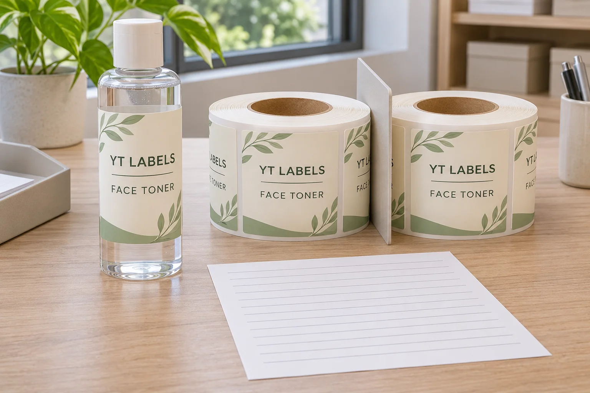
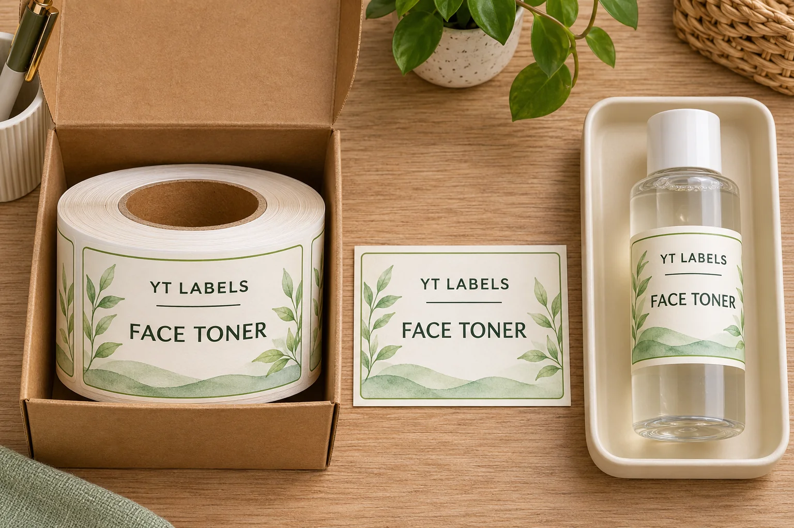

When part of a cosmetic label delivery is confirmed unusable, first establish how many complete packs the accepted stock can support. Use that count to decide whether to request a targeted replacement or a broader reprint. Agree the affected quantities, matching requirements and plan for the next filling run before authorizing any new printing.
An issue report opens the supplier review. A replacement brief answers a later purchasing question: what supply is needed to recover the planned output? Keep the two records connected so a replacement quantity can be traced to the accepted and held stock.

Count usable packs by component and revision
Obtain the receiving disposition for each SKU, artwork revision and label component. Record accepted, held and unreviewed quantities separately. For a front-and-back label pair, the smaller accepted component count sets the maximum complete packs before setup consumption and other required allowances. A carton count by itself cannot establish usable quantity.
Suppose a hypothetical run needs 1,000 packs and receiving has accepted 1,000 current front labels and 730 current backs. If there are no other constraints and each pack takes one of each, the currently accepted stock supports at most 730 finished packs. A 270-back replacement would cover the simple nominal shortfall. The actual replenishment brief still needs the co-packer's setup requirement and the confirmed number of labels available to use at the time of the run.
Use the quality issue guide to preserve observations, roll identity and the approved reference. Decide disposition with the relevant parties. Keep any stock still under review out of the available quantity until the responsible reviewer releases it.
Use a replacement decision record
| Field | Input | Check before deciding |
|---|---|---|
| Filling requirement | Current revision, required packs by SKU, use window and components per pack. | Which pack count the replacement needs to enable. |
| Accepted stock | Usable label quantities by component and revision, with setup consumption separately identified. | Which component creates the shortfall and which stock remains held. |
| Replacement scope | Proposed quantity, actual construction, matching reference, sample or review requirement. | Whether new labels can serve the same run alongside accepted labels. |
| Delivery and terms | Confirmed receiving point, dispatch timing, responsibility and treatment of the affected stock. | Whether the supported proposal solves the practical gap before the planned use. |
Ask the printer to state any run minimum or variable cost that affects its proposal. A small shortfall does not necessarily translate to the same exact number on a replacement quote. Compare the proposed quantity, release evidence and timing to the actual requirement before agreeing to the larger commitment.

Choose the scope the evidence allows
A targeted replacement can make sense when affected stock is identifiable, accepted stock can serve the order, and the printer can supply a compatible replacement. A broader reprint may require review when the affected scope cannot be bounded, the approved version has changed, or combining two production runs would create an unresolved visual or application issue. Ask for the physical comparison that matters to your pack.
YT Labels' order issue policy asks buyers to provide photos and order details for review so the team can propose a response. Obtain that response for your actual order. The shortfall calculation describes what the filling run needs. The supplier's response establishes the proposal, timing and charges, if any.
Hold the new release if the usable quantity, material match, approval owner or delivery basis remains uncertain. Use the reorder approval guide to lock the references once the replacement scope is accepted.
Prepare a replacement scope inquiry
Send the order and roll references, accepted and held counts by component, required pack quantity, approved version and delivery need. Ask the supplier to confirm the proposed replacement quantity, review and shipment conditions. The form prepares a message. Send supporting photos and records by email or WhatsApp.
Prepare a replacement inquiry